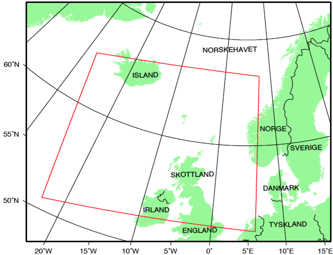
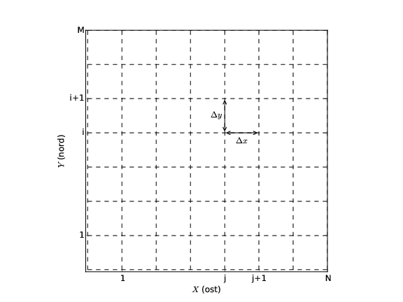

Datoruppgift: Visualisering av fält
Institutionen för fundamental fysik, Chalmers, Göteborg, Sverige
Aug 29, 2015
Introduktion
Ett viktigt vetenskapligt användningsområde för datorer är att visualisera olika fysikaliska förlopp. Detta består ofta i att skapa bilder av två- eller tre-dimensionella fält. Det finns många sofistikerade sätt att göra detta på , särskilt om man vill titta på tidsutvecklingen av tre-dimensionella fält. Speciella programpaket och, i vissa fall, datorer har utvecklats för detta ändamål. Vi skall dock begränsa oss till enklare fält i två dimensioner för vilka vi kan använda ett enkelt matematikprogram såsom Matlab eller Python (så kallade interpreterande programspråk).Vi kan särskilja två huvudtyper av fält inom den här kursen, skalära fält och vektorfält. Ett enkelt exempel på ett skalärt fält är trycket i en gas. Skalära fält illustrerar man ofta genom att rita nivåkurvor, det vill säga kurvor längs med vilka fältet antar ett konstant värde. På väderkartor ritar man till exempel ut isobarer för att visa hur trycket varierar. En annan möjlighet är att ge varje punkt en färg, som anger ungefär hur starkt fältet är i just den punkten. Ibland kan man välja att illustrera ett fält med en färgskala och ett annat fält med nivåkurvor.
Vektorfält är något krångligare att illustrera eftersom de skall ha både en storlek och en riktning. Det enklaste sättet att göra detta på med en modern dator är att rita ut pilar. Långa pilar där fältet är starkt och korta pilar där det är svagt. Ett annat sätt är att konstruera fältlinjer. Tangenten till en fältlinje ger då fältets riktning i en punkt, och tätheten av fältlinjerna ger fältets styrka.
En speciell typ av skalärt fält är en potential. Potentialen kan visualiseras genom att plotta nivåkurvor, vilka vi i detta fall kallar ekvipotentialkurvor (eller ekvipotentialytor om vi arbetar i tre dimensioner). Ur en potential \( \phi \) kan vi beräkna en fältstyrka \( \vec{F} = - \vec{\nabla}\phi \). Till \( \vec{F} \) kan vi sedan konstruera fältlinjer. En figur där vi plottar både ekvipotentialytorna till \( \phi \) och fältlinjerna till \( \vec{F} \) kallar vi en fältbild.
Meteorologi
Meteorologi är ett vetenskapligt område där fältteori ofta tillämpas. För att göra prognoser följer meteorologer utvecklingen av lufttryck, temperatur och vind med hjälp av väderkartor. Vi vill här visa hur \( \nabla \) operatörer som divergens och rotation kan vara användbara i analysen av väderdata. Förhoppningsvis kommer detta exempel också att bidra till att fördjupa den fysiska förståelsen av divergens och virvlar.
Den meteorologiska data vi kommer att analysera är från ett område i Nordatlanten, Norska havet och Nordsjön som omfattar Norges västkust, norra England, Skottland, Nordirland och Island (se Figur 1). Ett stort antal manuella och automatiska väderstationer är verksamma i området och genomför regelbundna observationer flera gånger om dagen.
Figure 1: Den väderdata som vi kommer att analysera är från det markerade området i kartan.

Väderstationer är inte jämnt fördelade och är, av naturliga orsaker, mer frekventa över land än över hav. Mätningar från ett världsomspännande nätverk av mätstationer ger data som analyseras med prognosmodeller. Dessa modeller kan bedöma tillståndet i atmosfären också i områden där observationer saknas. Med sådana modeller kan man till exempel beräkna lufttryck, vindhastighet och vindriktning i en uppsättning punkter som bildar ett regelbundet gittersystem längs markytan (Figur XX).
De uppgifter som vi kommer att använda kommer från Meteorologisk institutt, Blindern, Oslo. Det är lufttryck vid havsnivån och vindvektorer i isobarytan 850 hektopascal, som i sin tur ligger ca 1000- 1500 meter över havsnivån. Dessa data beräknas i ett rutsystem med \( \Delta x = \Delta y = 55 \) km, tisdagen den 19:e februari, 2002 kl 18 UTC (standardtid) och representerar den bästa möjliga uppskattningen av tillståndet i atmosfären vid det här tillfället.
En satellitbild (Figur 2) tas samma dag, men vid ett något tidigare tillfälle (16:13 UTC). Bilden visar att ett stort sammanhängande regnsystem täcker Irland, en del av England och Skottland och sträcker sig som ett ljusgrått band nordväst bort över Island. Nordost om detta regnsystem, dvs över Nordsjön och Norska havet, är det nästan klar himmel med lätta skurar i de norra delarna av Norska havet. På västra sidan av regnsystemet, dvs söder om Island, är det nästan helt klar himmel. Ni kommer att kunna få ett mått på hur bra er dataanalys är genom att jämföra era resultat med denna satellitbild.
Figure 2: Satellitbild från den 19:e februari, 2002. Ljusgrå färgton motsvarar regnväder, medan mörka toner är hav eller land.

Uppgift
Inläsning av data
Innanför det utmärkta området i Figur 1 definierar vi ett rutsystem med 30 x 31 punkter (se Figur 3). Det är 30 punkter i syd-nordlig riktning och 31 punkter i öst-västlig riktning.
Figure 3: Väderdata för området i Figur \1 är givet på ett rutsystem med 30 x 31 punkter. Avstånden mellan två närliggande gitterpunkter är \( \Delta x = \Delta y = 55 \mathrm{km} \).

Väderdatan är alltså sparad som matriser
$$
D(x_i,y_j) = D_{ij}, \quad i=1,2,\ldots,30, \quad j=1,2,\ldots,31
$$
Det finns tre filer:
-
tryckfalt.datinnehåller lufttrycket (givet i hPa) vid havsnivån. -
vindfalt_u.datinnehåller vindfältets komponent i öst-västlig riktning (dvs \( x \)-riktningen) vid isobarytan 850 hPa given i m/s. -
vindfalt_v.datinnehåller vindfältets komponent i syd-nordlig riktning (dvs \( y \)-riktningen) vid isobarytan 850 hPa given i m/s.
Uppgift 1: isobarer
Läs in lufttrycksdata och rita konturlinjer för tryckfältet (isobarar) eftersom detta är ett skalärfält. Det kan krävas lite experimenterande för att finna ett bra antal konturlinjer så att figuren blir tydlig. Kom ihåg att väderdata är sparad som en matris och att rutsystemet motsvarar en fix steglängd på 55 km.
Försök att identifiera ett lågtrycksområde och beskriv var det ligger.
Om rapporten
- Rapporten skall skrivas i TeX/LaTeX. Arbetar man i par lämnas en
gemensam rapport in.
- Rapporten skall inte omfatta mer än fyra sidor inklusive era figurer.
- Beskriv i rapporten hur ni går tillväga och vilka ekvationer ni
använder, men ni behöver inte redovisa era program.
- Tänk på att ge så mycket detaljer så att någon annan kan upprepa era
beräkningar. Glöm inte enheter.
- Redovisa era resultat i grafisk form när det är lämpligt.
- Diskutera och tolka era resultat.